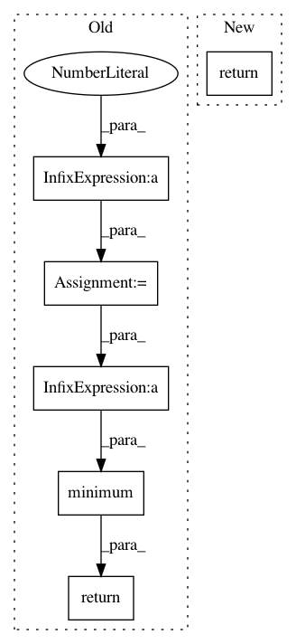

ce96b03b07a4a4bdd851aa84493c616cd291aff2,rllib/examples/env/mbmpo_env.py,HopperWrapper,reward,#HopperWrapper#Any#Any#Any#,39
Before Change
assert obs.ndim == 2 and action.ndim == 2
assert obs.shape == obs_next.shape and action.shape[0] == obs.shape[0]
vel = obs_next[:, 5]
ctrl_cost = 1e-3 * np.sum(np.square(action), axis=1)
reward = vel + alive_bonus - ctrl_cost
return np.minimum(np.maximum(-1000.0, reward), 1000.0)
if __name__ == "__main__":
env = HopperWrapper()
After Change
a = np.clip(action, -self.max_torque, self.max_torque)[0]
costs = self.angle_normalize(theta) ** 2 + \
0.1 * obs[:, 2] ** 2 + 0.001 * (a ** 2)
return -costs
@staticmethod
def angle_normalize(x):
return (((x + np.pi) % (2 * np.pi)) - np.pi)
In pattern: SUPERPATTERN
Frequency: 3
Non-data size: 6
Instances
Project Name: ray-project/ray
Commit Name: ce96b03b07a4a4bdd851aa84493c616cd291aff2
Time: 2020-10-06
Author: sven@anyscale.io
File Name: rllib/examples/env/mbmpo_env.py
Class Name: HopperWrapper
Method Name: reward
Project Name: arnomoonens/yarll
Commit Name: ecf257c1813cf3dd320c6d717208611dadeb2f0e
Time: 2018-03-15
Author: arno.moonens@gmail.com
File Name: agents/ppo/ppo.py
Class Name: PPO
Method Name: make_actor_loss
Project Name: OpenNMT/OpenNMT-tf
Commit Name: 1660b4cac42322f25a0e8f2645f4c01ef55a1792
Time: 2018-11-13
Author: guillaumekln@users.noreply.github.com
File Name: opennmt/utils/decay.py
Class Name:
Method Name: noam_decay